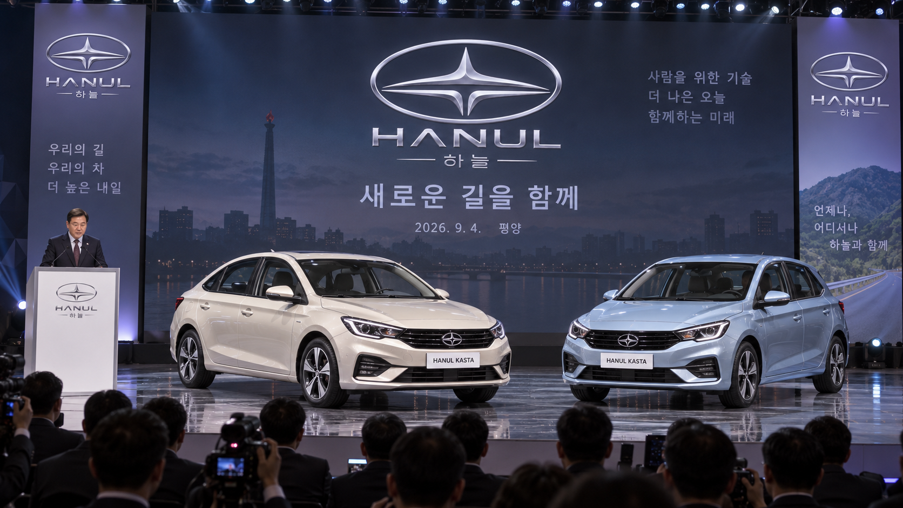
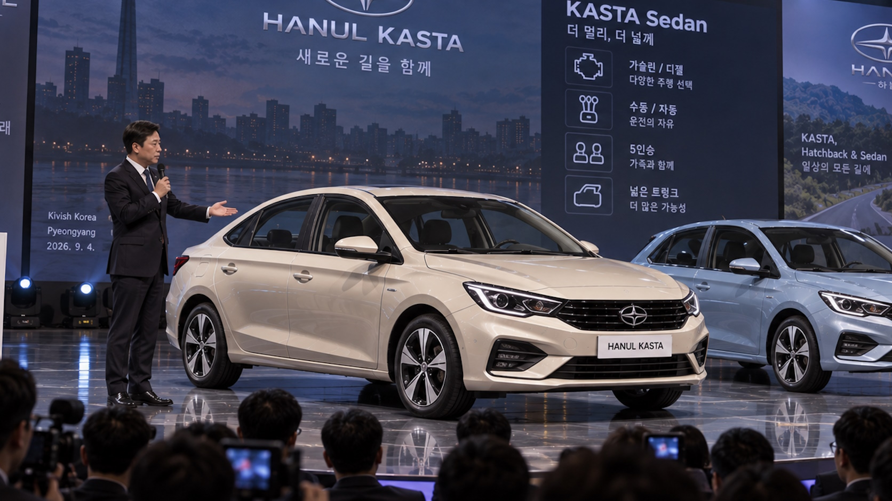

Hanul
Hanul (кор. 하늘) — государственная автомобильная компания Кивиш Корейского Полуострова, основанная 26 июня 2026 года. Компания была создана как новый внутренний автопроизводитель региона и как попытка сформировать собственную автомобильную марку северной части Корейского полуострова на фоне слабого присутствия южнокорейских брендов. Первой серийной моделью компании стала Hanul Kasta, представленная в сентябре 2026 года.
Первым направлением Hanul стала разработка массового легкового автомобиля для внутреннего рынка. Уже на старте компания начала сотрудничество с Tarifa Auto, имевшей опыт работы на рынке ККП, а также с японскими представителями автомобилестроения, связанными с Toyota. При этом производство двигателей для будущих машин планировалось развивать внутри самой компании.
История
Предпосылки
К середине 2020-х годов автомобильный рынок Кивиш Корейского Полуострова оставался сильно зависимым от внешних и союзных производителей. Южнокорейские автомобили, прежде всего Hyundai, встречались редко и не смогли занять устойчивое положение в регионе. На этом фоне в руководстве ККП всё чаще обсуждалась идея создания собственной автомобильной компании, которая могла бы работать именно под местные условия, дороги, покупательские привычки и политико-экономическую специфику автономии.
Отдельным фактором стала роль Tarifa Auto, чьи модели уже успели занять важное место в массовой моторизации ККП. Однако Tarifa Auto оставалась внешним для автономии производителем, тогда как Hanul должна была стать именно местной маркой, связанной с новым этапом промышленного развития северной части полуострова.
24 июня 2026: обсуждение в «Зале решений»
24 июня 2026 года в «Зале решений» президент ККП Денги Сильце провёл обсуждение экономического развития региона. Во время заседания один из советников предложил создать собственную автомобильную компанию, способную стать внутренней промышленной опорой и снизить зависимость от редких импортных машин. Идея была поддержана президентом, после чего началась подготовка к официальному оформлению нового автопроизводителя.
26 июня 2026: основание компании
26 июня 2026 года была официально создана автомобильная компания Hanul. Название компании записывается на корейском языке как 하늘. С момента основания она рассматривалась не как нишевый проект, а как будущий массовый производитель легковых автомобилей для ККП.
Уже в первый день работы, с девяти утра, в компанию пришли первые сотрудники. Они были распределены по ранним направлениям разработки: дизайн, ходовая часть, общая конструкция автомобиля, силовая установка и подготовка будущей производственной базы. Быстрый старт подчёркивал, что Hanul создавалась не только как политическое заявление, но и как практический промышленный проект.
Начало сотрудничества с Tarifa Auto и Toyota
Одновременно с запуском Hanul началось сотрудничество с Tarifa Auto, которая уже работала на том же рынке и фактически вытесняла Hyundai из повседневного автомобильного пространства ККП. Опыт Tarifa Auto был важен для понимания местного спроса: дешёвые машины, простота обслуживания, ремонтопригодность и адаптация под водителей, недавно вошедших в массовую автомобильную культуру.
Вторым направлением стало взаимодействие с японскими представителями автомобилестроения. В материалах раннего периода подчёркивалось, что разработка двигательной системы ведётся совместно с японской стороной, однако сами двигатели должны производиться собственными силами Hanul. Такой подход позволял компании получить инженерную поддержку, но не превращаться в простую сборочную площадку чужих агрегатов.
Июль 2026: первые сведения о машине
К июлю 2026 года Hanul уже занималась разработкой дизайна первого автомобиля и дальнейшей проработкой его конструкции. По ранним сливам, первая модель должна была получить кузов хэтчбек и переднеприводную компоновку. Такой выбор соответствовал задаче компании: создать практичный, компактный и сравнительно доступный автомобиль для городов и пригородов ККП.
Передний привод рассматривался как наиболее логичное решение для первой модели: он упрощал компоновку, снижал стоимость производства и хорошо подходил для массового городского автомобиля. Хэтчбек, в свою очередь, давал машине универсальность — её можно было использовать как семейный транспорт, автомобиль для молодых водителей и базовую модель для будущих модификаций.
4 сентября 2026: представление Hanul Kasta

4 сентября 2026 года в Пхеньяне была представлена первая серийная модель компании — Hanul Kasta. На презентации автомобиль показали как массовую машину для внутреннего рынка, после чего компания готовилась объявить цены и открыть первые продажи. Уже в момент показа стало ясно, что базовый хэтчбек близок к модели Tarifa Minic: основные отличия сводились к иной символике, деталям оформления и переработанным техническим узлам.
По неофициальным описаниям, коробка передач и ходовая часть проходили доработку при участии японской стороны, связанной с Toyota. Это позволило представить Kasta не как полностью самостоятельную разработку с нуля, а как быстрый локальный запуск на уже знакомой для рынка основе.
7 сентября 2026: утечка фотографий и седан

7 сентября 2026 года в сети появились фотографии Hanul Kasta, слитые за день до официального релиза. Хэтчбек на новых изображениях почти не отличался от раннего показанного автомобиля и воспринимался как минимально изменённая версия Tarifa Minic. Главной неожиданностью стала вторая машина на тех же снимках — Hanul Kasta Sedan.
Седан вызвал больше интереса, поскольку Tarifa Auto никогда не выпускала Minic в таком кузове. Поэтому именно седанная версия стала первым заметным признаком того, что Hanul пытается не только менять эмблемы, но и строить собственную модельную линейку на основе переработанной платформы.
Одновременно появились сведения, что обе версии Kasta получат механическую и автоматическую коробки передач. Для седана также упоминалась дизельная версия. Происхождение дизельного мотора официально не раскрывалось, но в обсуждениях его часто связывали с Toyota.
8 сентября 2026: старт продаж
8 сентября 2026 года Hanul Kasta поступила в продажу. Уже к 9:00 утра, сразу после открытия первого автосалона, у него образовалась очередь покупателей, пришедших за новым отечественным автомобилем. Подтвердились основные сведения из прежних утечек: хэтчбек и седан предлагались как с механической, так и с автоматической коробкой передач, а седан получил отдельную дизельную версию.
Компания не стала активно опровергать или «подчищать» ранние сливы. Впоследствии это объясняли тем, что утечки, совпавшие с реальной комплектацией, только усилили интерес к машине и фактически стали бесплатной рекламой перед стартом продаж.
Осень 2026: первые рыночные итоги
Первые продажи Hanul Kasta показали бодрый старт. Местные жители хорошо понимали связь автомобиля с Tarifa Minic, поскольку оригинальная модель продавалась в ККП ещё до появления Hanul. Однако это не стало серьёзным препятствием: для покупателей важным было то, что Kasta выпускалась как местный автомобиль, собранный и доработанный местными инженерами внутри собственной промышленной системы.
Популярность Kasta связывали не столько с пропагандой против Южной Кореи, сколько с логикой самостоятельной экосистемы: если южная часть полуострова претендовала на внимание и влияние на севере, то северная часть могла ответить созданием собственных институтов, включая автомобильную марку. В бытовой форме эта позиция часто пересказывалась как идея «самим захватить себя» — то есть самостоятельно построить нужные отрасли вместо ожидания внешнего поглощения.
Особенно быстро стала популярной дизельная версия седана. При этом среди покупателей и обозревателей возникала мысль, что дизельный двигатель логичнее смотрелся бы не только на седане, но и на универсале. Тем не менее отсутствие универсала не мешало спросу: главным оставалось само появление местного автомобиля.
На зарубежные рынки Hanul Kasta массово не выводилась. За пределами ККП в том же сегменте продолжала заметно присутствовать Tarifa Auto с моделью Minic, особенно на рынках Японии, России, Китая и основного Кивиша. Исключением стал ограниченный тестовый формат: Hanul арендовала и переоборудовала здание под пробную точку продаж, куда отправила только седан — версию, действительно отличавшуюся от исходного Minic. Там автомобиль предлагался с бензиновым и дизельным моторами, а также с механической и автоматической коробками передач.
Первый проект: Hanul Kasta
Первым серийным автомобилем Hanul стала Hanul Kasta. На раннем этапе проект описывался как переднеприводный хэтчбек, однако к моменту выхода на рынок линейка включала две основные версии: хэтчбек и седан.
- Базовая основа: Tarifa Minic с переработанной символикой и отдельными техническими изменениями.
- Кузова: хэтчбек и седан.
- Компоновка: передний привод.
- Коробки передач: механическая и автоматическая.
- Двигатели: бензиновая версия; дизельная версия для седана.
- Дизельный мотор: официальное происхождение не раскрывалось, в неофициальных обсуждениях связывался с Toyota.
- Назначение: массовый автомобиль для внутреннего рынка ККП.
- Рыночная роль: местная альтернатива редким автомобилям Hyundai и региональное дополнение к Tarifa Minic.
Hanul Kasta Hatchback
Хэтчбек стал наиболее прямой производной от Tarifa Minic. Его внешние отличия были сравнительно небольшими: другая эмблема, изменённые элементы оформления и собственное название Kasta. Именно эта версия чаще всего становилась объектом критики как пример быстрой локализации на чужой основе.Hanul Kasta Sedan
Седан стал более заметной переработкой проекта. Поскольку Tarifa Auto не выпускала Minic в кузове седан, Kasta Sedan воспринималась как первая попытка Hanul создать собственную модификацию, выходящую за рамки простой смены шильдиков. Эта версия предлагалась с бензиновым и дизельным моторами, а также с механической и автоматической коробками передач.
Рыночная роль
Hanul создавалась как автомобильная марка, которая должна была закрепить за ККП собственное место в легковом автопроме. В отличие от Tarifa Auto, начавшей как подразделение крупной компании, Hanul с самого начала формировалась именно как региональный автопроизводитель северной части Корейского полуострова.
Главной задачей компании стало не немедленное международное расширение, а создание понятного внутреннего продукта: автомобиля, который можно массово производить, обслуживать и использовать в городах ККП. При этом сотрудничество с Tarifa Auto и Toyota позволяло Hanul не начинать разработку полностью с нуля.
После старта продаж Hanul Kasta стала важным символом внутренней автомобильной самостоятельности ККП. Покупатели не обязательно считали автомобиль полностью оригинальным, но воспринимали его как продукт местной промышленности: разработанный, доработанный и продаваемый от имени собственной компании северной части полуострова.
В 2026 году компания почти не выходила на внешний рынок, чтобы не конкурировать напрямую с Tarifa Minic там, где эта модель уже имела устойчивые позиции. Ограниченный тестовый вывод касался прежде всего седана, поскольку он отличался от исходной модели сильнее хэтчбека и мог использоваться как проверка интереса к самостоятельным модификациям Hanul.
Технологии и разработка
Ранний этап разработки был сосредоточен на базовых автомобильных направлениях: ходовой части, кузовной архитектуре, дизайне, силовой установке и подготовке будущих производственных процессов. Особое внимание уделялось двигательной системе, поскольку собственное производство моторов должно было стать важным признаком самостоятельности Hanul.
Совместная работа с японскими специалистами рассматривалась как способ получить доступ к инженерной школе, ориентированной на надёжность и ресурс. Однако сама компания подчёркивала курс на локализацию: ключевые агрегаты, включая двигатели, должны были производиться внутри системы Hanul.
Выход Kasta показал смешанный характер ранней инженерии Hanul. Хэтчбек опирался на уже существующую конструкцию Tarifa Minic, тогда как седан требовал более глубокой переработки кузова и задней части автомобиля. За счёт этого седанная версия стала важнее для репутации компании: она показывала, что Hanul способна не только локализовать готовую модель, но и создавать новые варианты на её основе.
Наличие механической и автоматической коробок передач позволило компании сразу обратиться к разным группам покупателей. Механика сохраняла низкую цену и простоту обслуживания, автоматическая коробка делала автомобиль удобнее для городской эксплуатации, такси и служебных парков. Дизельная версия седана быстро стала одной из самых обсуждаемых из-за экономичности и возможной связи с японской инженерной школой.
Особенности
- Региональная идентичность — компания создавалась как собственный автопроизводитель ККП.
- Поздний старт — Hanul появилась только в 2026 году, когда рынок региона уже имел опыт массовой моторизации.
- Сотрудничество с Tarifa Auto — использование опыта компании, давно работающей с доступными автомобилями для ККП.
- Японское инженерное участие — помощь в разработке двигательной системы при сохранении курса на собственное производство.
- Ставка на хэтчбек — первый проект был ориентирован на практичный массовый кузов, а не на дорогую имиджевую модель.
- Седанная модификация — Hanul Kasta Sedan стала первым вариантом, заметно отличавшимся от Tarifa Minic.
- Популярность дизеля — дизельная версия седана быстро стала одной из самых востребованных и обсуждаемых.
- Осторожность на внешних рынках — компания не стала массово выводить Kasta за рубеж, ограничившись тестовым продвижением седана.
Критика и вопросы
На раннем этапе Hanul сталкивалась с несколькими вопросами. Главным из них была способность новой компании быстро перейти от политического решения к реальному серийному производству. Отдельно обсуждалась сложность собственного выпуска двигателей: для молодой марки это требовало не только проекта мотора, но и производственной дисциплины, контроля качества, поставщиков, испытаний и сервисной базы.
Также вызывал вопросы баланс между самостоятельностью и внешней помощью. С одной стороны, сотрудничество с Tarifa Auto и японскими специалистами снижало риск провала первой модели. С другой стороны, Hanul должна была доказать, что является не просто местным брендом с чужими технологиями, а полноценной автомобильной компанией ККП.
После выхода Hanul Kasta главным объектом критики стало происхождение автомобиля. Хэтчбек часто описывали как перелицованную Tarifa Minic, поскольку визуальные и конструктивные отличия были ограниченными. Это ставило перед Hanul вопрос о том, сможет ли компания в будущем перейти от локализации и производных моделей к самостоятельной платформе.
Отдельно обсуждалась дизельная версия седана. Её популярность показывала правильное попадание в запрос рынка, но происхождение мотора оставалось не раскрытым официально. Также часть покупателей считала, что дизельная силовая установка была бы особенно уместна в кузове универсал, однако такая версия в первой линейке Kasta не появилась.